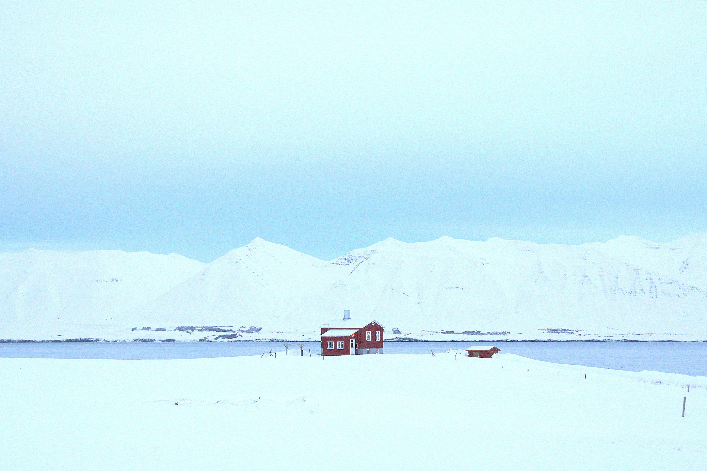
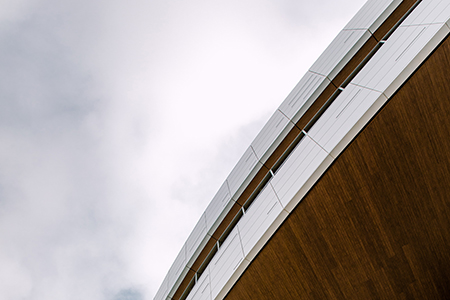
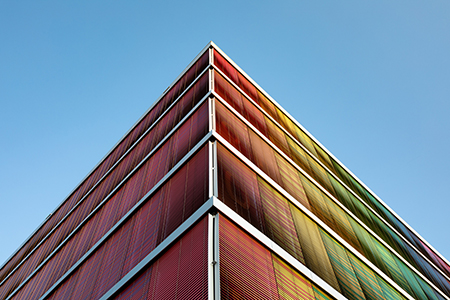
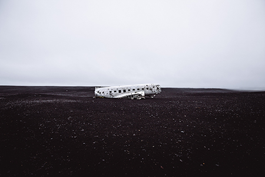

It supports captions, high-res images, and art direction right out of the box, and is easily extendable if you need more features.
Should you wish to have more control over how the lightbox is displayed, you can style it with CSS or completely replace the DOM structure - the animation will adapt automatically.




But why another one?
There are several other libraries that deliver a similar feature. Unfortunately, I've been unable to find one that lives up to my needs when it comes to user experience and customizability.
Specifically my focus for this library has been on:
User experience, especially for loading of high-res images.
Full customizability so developers can tune the lightbox to their specific site.
Built-in support for features like <picture> and srcset.